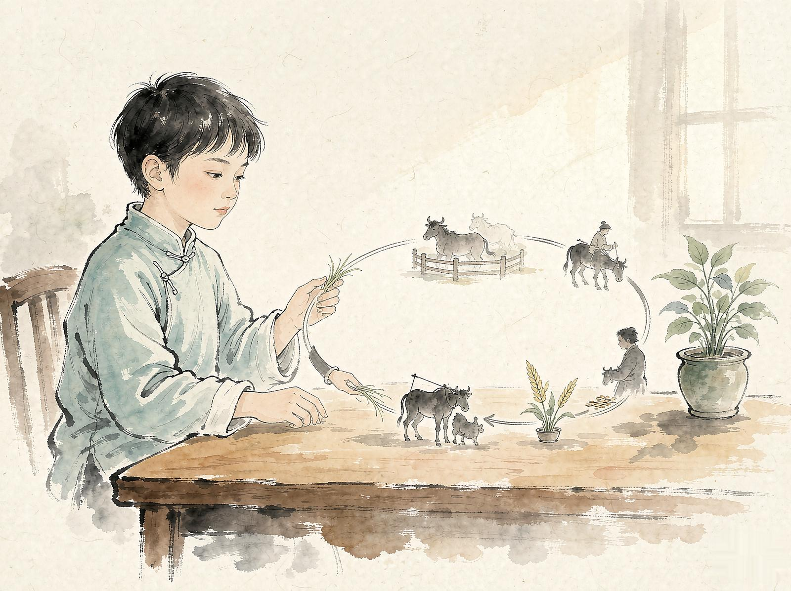

此六畜，人所饲
对比前文阴阳、六谷：六谷是人所食，是人向草木取资；六畜是人所饲，是人主动付出滋养，而后得其功用。一出一入，阴阳往来，是人与有情之间双向的缘起链条。俗见勘破：不可简单理解为「人养牲畜为人所用」，重点在「所饲」这个相待结构——本无「家畜」，因有人饲喂护持，才有这一重身份；倘若停止饲喂、放归山野，这个「畜」的名分与依存关系便随之消散。名相依因缘而立，没有固定不变的自性，契合全书般若范式：佛说畜，即非畜，是名畜。
前面我们认识了马、牛、羊、鸡、狗、猪这六畜。
经文接着告诉我们：这六畜，是人饲喂喂养的。
野外的鸟兽，自己去找草籽、小虫、水源，独自面对风雨危险。

六畜不一样：人给它们准备草料、饮水，搭建圈舍，护持它们存活；作为因缘的回应，它们帮人耕田、看家、代步，滋养我们。
这是一份互相依存的关系。我们照料它们，也当存一份体恤，不随意苛待。

落到心上理解：饲养是因缘纽带。畜的身份，依附于人饲喂这个外缘；人的这一份照料，也同时系着取舍、责任。修行的中道，是看见这份双向关联：不认为畜天生供我驱使，也不否定世代延续的日用依存。能知因缘、存体恤、知分寸，便是在这件日用事中守住本心。
饲喂只是投资，一心只求畜回报于我，漠视其苦乐；或执着不可饲、不可用，脱离世间农耕日用次第。
明白饲是责任，因缘相依，取用有度，心怀怜悯；不废日用，不执实相，在相待之中守持中道。
- 六畜由人饲喂养育，形成人和动物之间互相依存的关系。
- 野外鸟兽自觅生存资粮，和人饲之畜，因缘处境截然不同。
- 饲喂代表一份责任，得到功用的同时，应当善待生命。
- 名分由因缘建立，没有永恒固定的「家畜」之相。
一、勘俗见。和上一课成对：六谷「人所食」是人向外取，六畜「人所饲」是人向内施养，完成一组往来对照，落实相待缘起。
二、现代对照。可以结合宠物、家畜，和孩子讨论：喂养意味着责任，既然养它，就要善待它；同时区分生活所需与肆意伤害。
三、承接常变主线。饲喂方式、畜养用途随时代变迁，是可变之相；缘起相依、仁者存恤的道理不变，是常。
四、承接教与学二分。家长引导懂得养护的责任，属施教一侧；孩子慢慢学会善待生命、克制粗暴，是自主修习。
接上选择力练习：一饲一取皆因缘，心不生主宰之慢。
此六畜，人所饲
一 · 字义与句读饲，以食予之，养护其命。此处「畜」读 chù，指所养之牲。
全句释义：此六畜，由人饲喂养护，建立相依的缘起。对比野禽走兽的自活，凸显人为外缘，安立「畜」这一假名身份；和前文「此六谷，人所食」形成一取一予的完整对照。
二 · 命题考辨（一）一取一予的结构。稻粱六谷：大地自生，人采收而食，是人取于草木。六畜饲养：人主动供给饮食庇护，而后得其功用，是人施而后取。这一组对仗，是《三字经》此处极精妙的安排：天地的资养有两层，一层静植待取，一层有情需养护而后可用。没有这个饲喂的外缘，六畜便和鸟兽无别；名，依缘而起。
（二）对照当下现代语境。现代畜牧、伴侣动物，都绕不开这一句的底层命题：饲喂的初心是什么？若是纯粹工具化，生命就沦为资源；若是一味共情而否定现实依存，又落入脱离世间的空见。经文只陈列这个相待事实，不下极端定论，留给修学者在日用之中拿捏分寸，正是儒、般若共许的中道。
（三）般若范式互参。畜、饲、饲者，三者因缘和合，不能单独成立。联动空杯模型：虚空自性为本，饲喂、圈养、护持是外缘，「六畜、家畜」是缘起显现的相。畜本身的觉知自性，与人平等；只是因缘位置不同，显现出饲与被饲的关系。
呼应「本乎数」：六数接续前文六谷，一动一静、一取一施，两两对称，是文本取象的方便，不必固化。
（四）延伸义理。《金刚经》讲布施、摄受众生，这「饲」字，便是最朴素的摄受。摄受养护，不等于占有主宰；可以养护，可以依因缘取用，但不生「此物属我」的坚固我相、法相。行而无住，施而不执，便是此处的般若行。
三 · 跨典互参《道德经》：「既以为人，己愈有。」饲喂养护，是为人，亦是自全其日用。
《庄子·庚桑楚》：「至仁无亲。」仁不是偏爱，而是看透人畜同源，在相待关系里不生残虐之心。
串联前文：山河、四时、草木、六谷、六畜，一路铺展外缘；至此完成人与万物资养往来的闭环，为后面收束回到人伦教化铺垫。
四 · 与前后课的张力呼应「人不学，不知义」：义在于看透饲养的双向缘起，不生主宰、占有之见。
呼应「玉不琢，不成器」：打磨自心，就在养护、取用之间，练习仁心与中道。
呼应「教之道，贵以专」：见闻之学，完成天地资养、人伦取用的闭环，由万物回归人心之修。
次第链条继续延伸：…… → 马牛羊，鸡犬豕 → 本课
一、饲喂养护，是否会形成羁绊，产生执着？如何做到养护而不执？
二、若是因缘转变，无力继续饲喂，放归山野，算不算背弃责任？
三、同样是生命，为什么草木可采，畜养之有情就要多一层体恤？分界根源何在？